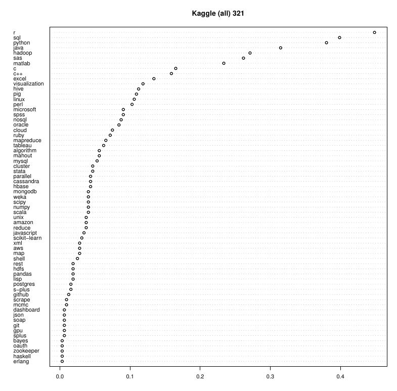
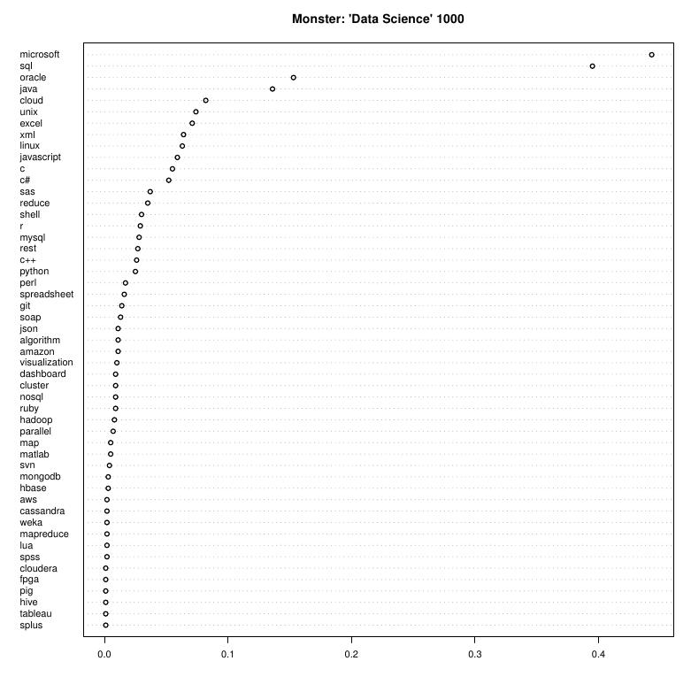

Welcome to STA 250!
On the menu for today...
Types "big" data
Approaches to "big" data
Basic things about working with "big" data
Example: Big Logistic Regression
The Bag of Little Bootstraps
Obtaining SE's for a 6m x 5k logistic regression
Paul D. Baines
On the menu for today...
Types "big" data
Approaches to "big" data
Basic things about working with "big" data
Example: Big Logistic Regression
The Bag of Little Bootstraps
Obtaining SE's for a 6m x 5k logistic regression


What is "big" data?
Exabytes?
It depends what you are trying to do with it!
Large \(n\) and not large \(p\):
Large \(p\) and not large \(n\):
Since this module is only 4 lectures, we will deal exclusively with problems of type 1.
The computational skills you will learn are equally applciable to working with the other classes of problems.
Naive approaches designed for traditional amounts of data do not tyically scale to "big" data. How to scale to big data then? Usually some combination of:
Assuming that the data has inherently lower-dimensional structure
Fast algorithms
Methodology that avoids the need to fit the "full" data
From the R documentation:
There are limitations on the types of data that R handles well. Since all data being manipulated by R are resident in memory, and several copies of the data can be created during execution of a function, R is not well suited to extremely large data sets. Data objects that are more than a (few) hundred megabytes in size can cause R to run out of memory, particularly on a 32-bit operating system.
We can't read in data to memory, so what alternatives are there?
File-backed data structures (i.e., data remains stored on disk, not memory)
bigmemory (and other big* packages). See: http://www.bigmemory.org/Databases
In this module we will work with (1) and (3), as well as learning a little bit about databases.
Lets start with a practical example using method (1).
On Gauss I have created an uncompressed 255Gb file containing data for fitting a "big" logistic regression model (6m observations, 3k covariates).
Goal: Find standard errors for the parameter estimates of the logistic regression model.
To do this:
bigmemory (or Python equivalent)(Could just as well ask for CI's in place of SE's)
The basics:
# Create a file-backed big.matrix:
# (Takes ~minutes, and creates large .bin file, and small .desc file)
goo <- read.big.matrix(infile, type="double", header=FALSE,
backingpath=datapath,
backingfile=backingfilename,
descriptorfile=descriptorfilename)
# Attach that big.matrix:
dat <- attach.big.matrix(dget(descriptorfile),backingpath=datapath)
This is actually overkill for what we will need here (and quite inefficient), but in some cases the extra functionality is useful.
For example, to fit "big regressions" with biglm.big.matrix or bigglm.big.matrix.
Can still do the basics (they just might take a while!):
# First row:
dat[1,]
# Number of rows:
nrow(dat)
# First two rows, first ten columns:
dat[1:2,1:10]
# Random sample of 5 rows:
dat[sample(1:nrow(dat),5),]
We actually won't use any of the real functionality of the bigmemory suite
of packages. All we really need is the ability to read arbitrary lines from
a file without loading the full file into memory.
load the fileExtract the data from the line
def read_some_lines(filename,lines):
# output lines specified by lines e.g., [1,100,10000]
"read_some_lines" = function(filename,lines,max_block=1000,verbose=FALSE){
# output lines specified by lines e.g., c(1,100,10000)
}
Now we have the data in: that is progress.
We are fitting:
\[ Y_{i} | \beta \sim \textrm{Bin}\left(1,\frac{\exp\left\{x_{i}^{T}\beta\right\}}{1+\exp\left\{x_{i}^{T}\beta\right\}}\right) , \quad i=1,\ldots,6000000 . \]
Goal:
How might you do this for small datasets?
We talked about the bootstrap during boot camp.
Suppose we have an estimator \(\hat{\theta}=g(X)\) (e.g., the MLE).
The basic Bootstrap algorithm (Efron, 1979) to approximate \(SD(\hat{\theta})\) is:
With independent observations this works well. There are more sophisticated modifications for dependent data (e.g., spatial data, time series data etc.).
For the logistic regression model, we have both \(X's\) and \(y's\).
When we resample points, we resample both \(x_{i}\) and \(y_{i}\). This is sometimes called the paired bootstrap.
There are other alternative bootstrapping procedures (e.g., bootstrapping the residuals) with possibly better/worse performance.
For the logistic regression problem, using \(B=500\):
Any problems here?
Now, lets introduce the "Bag of Little Bootstraps" method (Kleiner et al., 2011).
The basic idea:
For estimating \(SD(\hat{\theta})\):
Let \(\hat{F}\) denote the empirical probability distribution of the data
(i.e., placing mass \(1/n\) at each of the \(n\) data points)
Select \(s\) subsets of size \(b\) from the full data (i.e., randomly sample a set of \(b\) indices \(\mathcal{I}_{j}=\left\{i_{1},\ldots,i_{b}\right\}\) from \(\left\{1,2,\ldots,n\right\}\) without replacement, and repeat \(s\) times).
Real key is \(b\). From paper \(b\approx{}n^{0.6}\) or \(b\approx{}n^{0.7}\) works well.
What is the gain then?
Why does the BLB algorithm work?
How can use the array job capabilities of Gauss to help speed things up?
How might you organize the array job in terms of the subsets and bootstrap replicates?
What can you do if each data point occurs multiple times?
Today we have seen how to obtain SE estimates for potentially huge datasets using very minimal advanced computing. In fact, it only took two key steps:
Avoid reading data in memory using bigmatrix
Avoid fitting full dataset using the BLB
Next week we will look at more general computing tools and paradigms: MapReduce, Hadoop, Hive, and using Amazon ElasticMapReduce.
http://icanhas.cheezburger.com/ Mon: More big data!